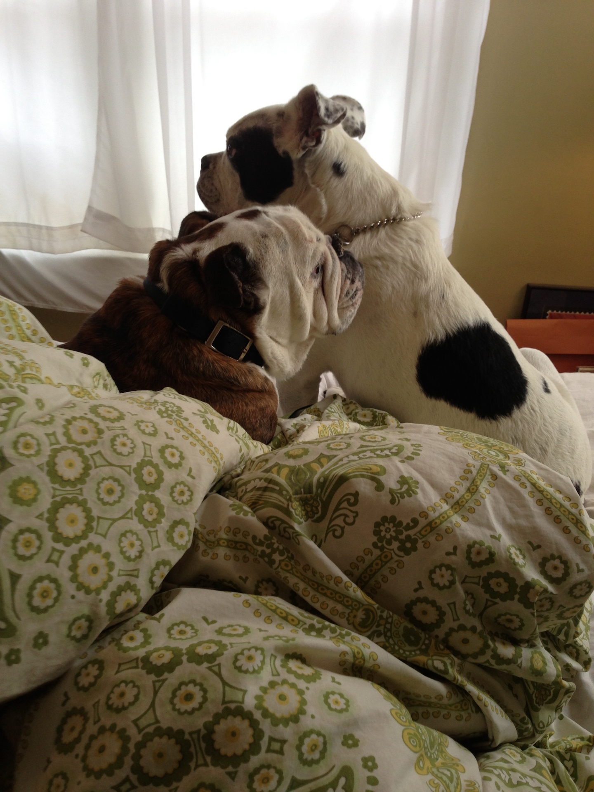

My Kids
Guy and Cooper

Guy and Cooper are my sons. Believe me, I know the difference between a pet and a child because I've had countless pets, but only two children.
Guy is an Olde English bulldog and Cooper is an English bulldog.
Guy Winston-Churchill Larkin-Federer

On March 28, 2010 Guy "came into my life like a brick through a window
and I cracked a smile" as the Trashcan Sinatras so perfectly phrased it.
He changed my life and he made me a better person because I finally
understood unconditional love. I have always described Guy as "100%
sweetness" because he has absolutely no guile. Depite being abused in his rescue,
he has always been devoted, unwaveringly trusting, and the world's ultimate mama's boy.
Guy came to me at the age of 3 and 1/2. His little brother and I bid him and earth-shatteringly painful goodbye at the tender age of 9, exactly 2 and 1/2 years to the day of his first chemo treatment. On October 16, 2013 we learned that Guy had cancer and found out a few of days later that it was lymphoma. He was only 6 and 1/2 and there was no question that we would do chemo. He had a beautfil 16 months of remission in between rounds and we savoured every minute of it. 2 weeks before he was supposed to reach his second round of remission, the cancer came back and it was aggressive. We went into emergency chemo protocols, but, ultimately, it became too hard on his body and I had to make a choice that no mother should ever have to make.
Guy's life (November 12, 2006 - April 16, 2016) was a gift to everyone who knew him. He was so incredibly happy and sweet. He loved food, especially cauliflower; his favourite song is Happy Birthday to which he loved barking along; he was the best little spoon; he loved backpacking and carried his own pack; he loved and loved and loved.
Cooper PeeWee Herman Larkin-Federer

Like many of us, growing up my parents always told me that I'd end up with a child just like myself (I'm the problem child!). They were right because I ended up with Cooper. Cooper is loving and gentle, but man oh man, is he full of spite. He hates being bossed and will do the opposite no matter what. He's stubborn to a fault and he's very devious. He's a stickler for for self-imposed protocols.
Cooper joined our family at the age of 5 and Guy was not at all thrilled to be sharing his mother's affection. But they soon bonded and Guy is the only dog or animal that Cooper has interacted with. Coops came with a great set of physical challenges. He was 20lbs overweight; his nose was so scabbed over that he could barely smell; his left tear duct was cut out and the eye was constantly covered in thick mucous that was painful to clear out; and he had severe yeast and bacterial ear infections that caused a very potent odor. I had my work cut out for me. Diet, acupuncture, and physycal therapy (including an underwater treadmill!) got the weight off and his arthritis under control. Long sessions of daily face and ear cleanings plus the addition of some amazing eye drops got everything else under control. Now, at almost 10 years old, he's in better shape than ever. He's a spoiled mama's boy who enjoys being carried and riding in his dog stroller.
Cooper was born January 27, 2007 and surrendered to the bulldog rescue 5 years later. He was then passed from foster home to foster home until he ended up with my brother who knew just the right place for him. Cooper loves food and making messes with it; his favourite song is Edelweiss, which is the only way I can calm him down for ear cleanings; he loves being sneanky; he snores me to sleep like ocean waves; and he enjoys sitting on my head when he's mad at me.
As you can see, I have the best kids ever!
